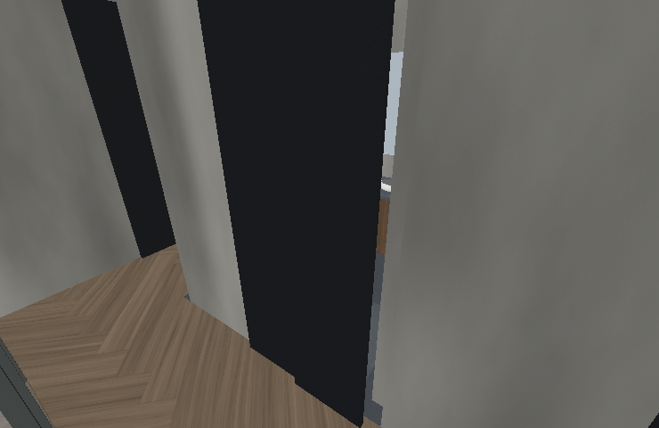
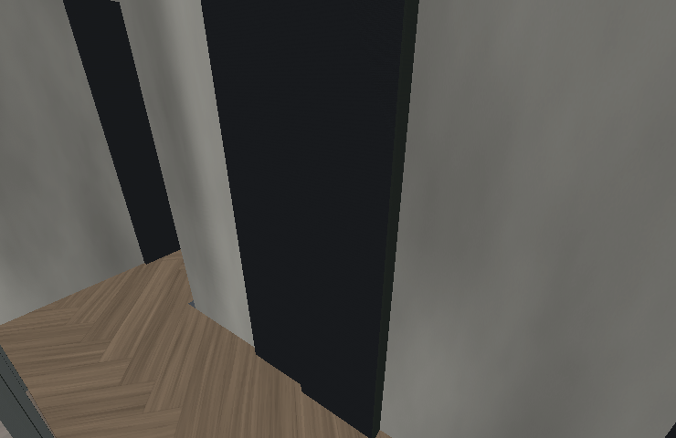
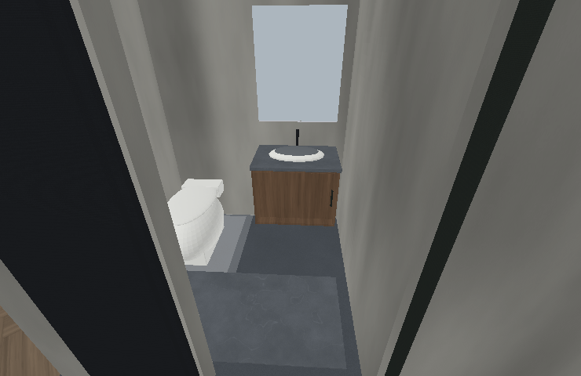

客浴拉門關上後，補齊露出的牆角
原本右側隔牆提早10cm結束，門片搭接不足；從走道斜看，會看見門後空隙。這次將隔牆接至走道面，補齊門頂與右側止口。


- 右側隔牆延伸10cm，保留80cm門洞。
- 兩片45cm門扇，側邊各搭接3cm，片間搭接4cm；補背側搭接條。
- 215～245cm門頂封板接至梁下，右側止口接回牆面。
- 全開時兩片向左分別移動43／86cm，收在原75cm牆側，完整留出80cm通道。

四版已使用實際模型進行關門斜向視線、門頂遮擋、全開位置與步行檢查；其他房間與設備幾何保持。圖片為源模型離線渲染，未代表GPU反射及實機照明驗收。搭接與五金尺寸為模型修正提案。